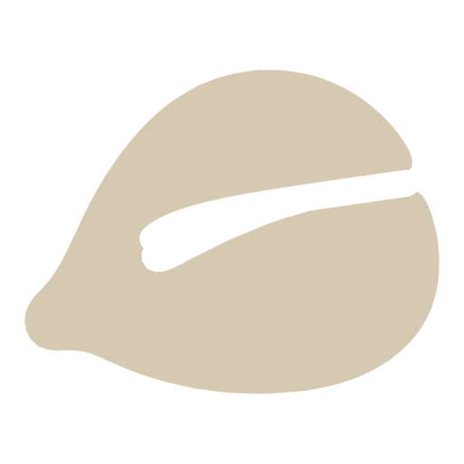
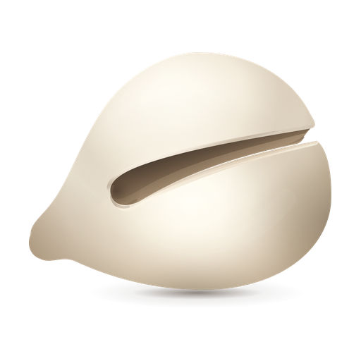
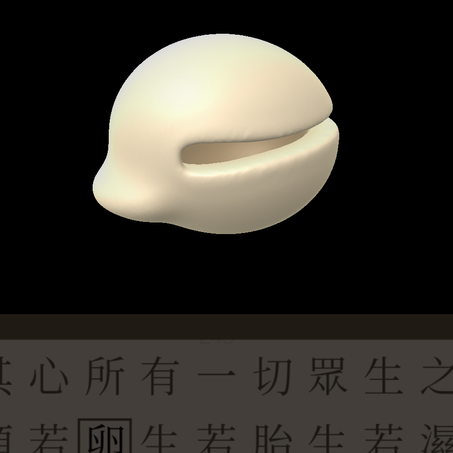

木魚 · 其四
一件木魚，三種面貌
剪影簡淨、微立體溫潤、立體可把玩——
桌面是哪一面，你說了算。

剪影
平面設計，最省電

微立體
玉料：白玉 · 青白玉 · 糖玉

立體 3D
拖動旋轉 · 全屏
三種白
紙白 · 象牙白 · 月白
剪影專用
三種玉
和田玉國標色類
白玉 · 青白玉 · 糖玉
三種材
玉石 · 木頭 · 蜜蠟
立體模式可用
木魚 v1.9
剪影 · 微立體 · 立體 3D